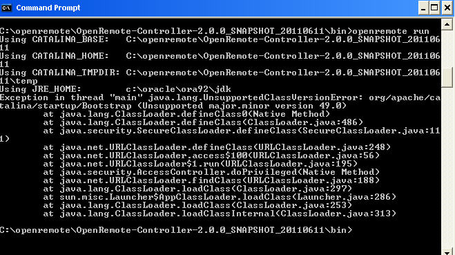
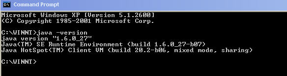
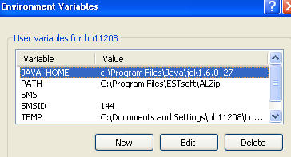

|
This page last changed on Nov 09, 2011 by tveitdal.

I'm trying to install thecontroller, I think i have the right JDK. But i still get this errormesssage and the controller doesn`t start.
Any guru`s out there who got any idea of what`s wrong ?
Terje
|
Hi Terje,
It looks like a mismatch between your Java version and the version with which the snapshot was compiled. Version 49 is Java 1.5, running 'java -version' will tell you which version of Java you're running.

Posted by fuijtdewilligen at Nov 09, 2011 14:13
|
|

Ok, Do i have to "downgrade" to java 1.5 ?
Or could it be that the path in JRE_HOME is wrong ?
Terje!vesrion.jpg!
Posted by tveitdal at Nov 09, 2011 15:28
|
|
Maybe there are two coexisting Java installs (been there  ), i.e., one in your Program Files and the one in the Oracle folder? I think Java 6 should be fine, but I leave the judgement on that up to the Openremote developers. ), i.e., one in your Program Files and the one in the Oracle folder? I think Java 6 should be fine, but I leave the judgement on that up to the Openremote developers.
Posted by fuijtdewilligen at Nov 09, 2011 17:00
|
|
The JRE_HOME is wrong. It is pointing to an older Java at "c:\oracle\ora92\jdk".
You have to have it point to the one which is in your Path which seemt to be the right one.
Posted by mredeker at Nov 10, 2011 07:40
|
|
Cool, thanks guys.
I changend the JRE_HOME, and the controller works now.

Posted by tveitdal at Nov 10, 2011 11:30
|
|
{kind=link}
{kind=link}
{kind=link}